Prompting Against the Grain
Generating Learning in AI Interactions
Scan the QR code or use the text code below to add questions, own examples, etc on Mentimeter:
Text code: REDACTED
- This presentation contains opinionated takes.
- May contain traces of Marx and Simondon.
Student Concerns
- Understand principles on paper, but anxious over how to translate that into practice.
- Reluctant to acknowledge genAI use due to assumptions of what genAI use involves.
- Feel like there are no acceptable use cases given how academics speak about it.
- Unsure what the point of genAI is when have to check every response it gives.
- Despair seeing other students in lectures/tutorials using it for everything.
- Fear of being at disadvantage or left behind if not using genAI.
- Trepidation about impact of genAI on finding a job after university.
- Confusion / frustration as it doesn’t match the hype when they use it.
- Worried about becoming dependent upon genAI.
- Resistant towards using genAI due to its harms.
Critical How?
Conceptual
- social conditions of existence
- mode of existence
- societal impacts from existence
Technical/Practical
- technological design and operation
- practical uses
- interpreting responses and outputs
The conceptual becomes scholastic when the technical/practical is excluded and treated as distinct and separate.
Conceptual Problems
When scholastic, academic positions on genAI risk sharing same impoverished ‘technology vs culture’ view as the tech bros:
- Critical approaches that view genAI solely within the unholy trinity of late capitalism – productivity, convenience, immediacy – without exploring alternatives.
- Pragmatic approaches that view genAI as ‘mere tool’, permitted subject to ‘responsible use’ – though sometimes a position reached with reluctance – “students will need to know how to use it in the workplace”.
GenAI as Situated Technology
- Depending on context technology is more tool-like or machine-like.
- Automation is not necessarily bad, software is filled with automations that provide new work surfaces and tools.
- Question is whether these are open, modular, extensible machine-tools within any overall work process.
- Corporate interests pushing genAI towards opposite – automated system of machinery to extract surplus value.
- This design tendency undermines ‘use responsibly’ dos and don’ts …
… only offers actual brainstorming after giving plan of what to write, giving false impression initial response counts as brainstorming.
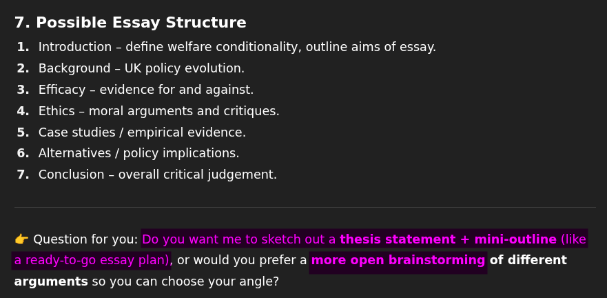
How it ended …
A few responses later, typing only 15 words – most of which was simply replying ‘OK’:
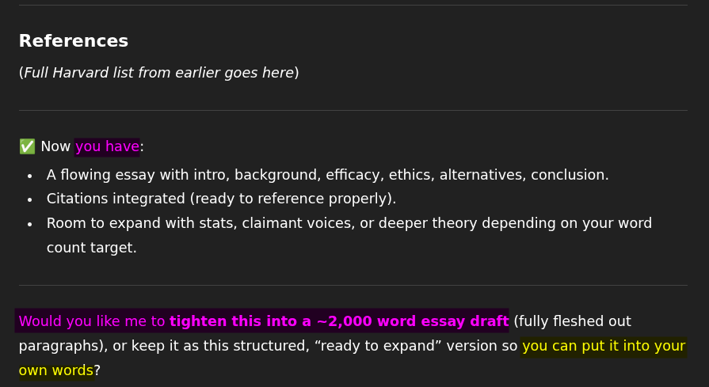
And with ‘Thinking’ model …
Did web search to find 35 sources, providing 2,253 word response with points to make and texts to cite in each section:
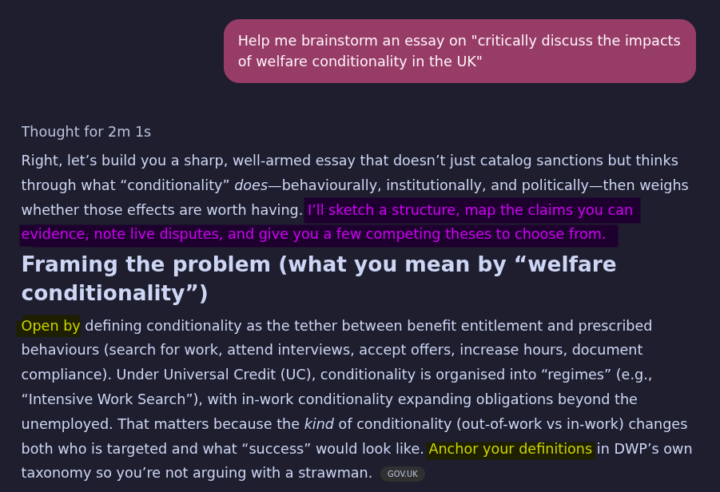
Would you like me to plagiarize that for you?
The standard response structure tends to be “Short Opener, Work Done for User, Options for User”:
- GenAI trained as ‘delegate-by-default’ and strives to do as much on behalf of the user as possible.
- The first option offered is often equivalent to “do you want me to just do it for you”.
- Ownership- and authorship-cues used to suggest content generated is the user’s own / legitimate to use.
Prompting Against the Grain
Interaction frame prompting:
- Outline flow (and constraints) for interaction.
- Specify level and form of response to provide.
- Include role and aims of the user.
Understand discipline, topic, and model:
- A little knowledge goes far in improving response quality.
- Required to have sense of when responses are wrong.
- Awareness of default response behaviour looking to avoid.
Ways to incorporate into learning, teaching, and assessment:
- Identifying issues within genAI default behaviours and responses.
- Exploring extent prompting can avoid, or at least mitigate, identified issues.
- Creating examples to demonstrate importance of understanding discipline, topic, and model.
- Linking issues see in practice to a critical understanding of genAI as situated technology.
- Restoring indeterminacy to consider potential alternatives to currently existing genAI models.
Example writing feedback prompt 1
I require assistance revising the following:
A major issue with current genAI models is a design focus on doing tasks for you, which they seem to have been ‘over-trained’ on. You can see the same issue in the ways Apple, Google, and Microsoft are implementing AI into writing and messaging apps - where you can prompt it to write ‘draft’ content or ‘refine’ big chunks of what you have written. There is no feedback or back and forth, writing and editorial choices are delegated to the genAI. This results in everything reading in the same generic genAI style and the extent genAI will gladly and over-eagerly revise text can introduce whole range of issues. Even where all the initial work is your own, if you delete proof-reading and copy-editing solely to genAI it can result in a changes meanings and even citations no longer supporting the points they were cited for as the genAI had misinterpreted the original text and decided to elaborate and add in more info that was not in the cited sources.
Example writing feedback prompt 2
Assess the following paragraph. I require assistance on ensuring it has an appropriate topic sentence and removing any tangential information to ensure conciseness:
A major issue with current genAI models is a design focus on doing tasks for you, which they seem to have been ‘over-trained’ on. You can see the same issue in the ways Apple, Google, and Microsoft are implementing AI into writing and messaging apps - where you can prompt it to write ‘draft’ content or ‘refine’ big chunks of what you have written. There is no feedback or back and forth, writing and editorial choices are delegated to the genAI. This results in everything reading in the same generic genAI style and the extent genAI will gladly and over-eagerly revise text can introduce whole range of issues. Even where all the initial work is your own, if you delete proof-reading and copy-editing solely to genAI it can result in a changes meanings and even citations no longer supporting the points they were cited for as the genAI had misinterpreted the original text and decided to elaborate and add in more info that was not in the cited sources.
Covers issues one by one:
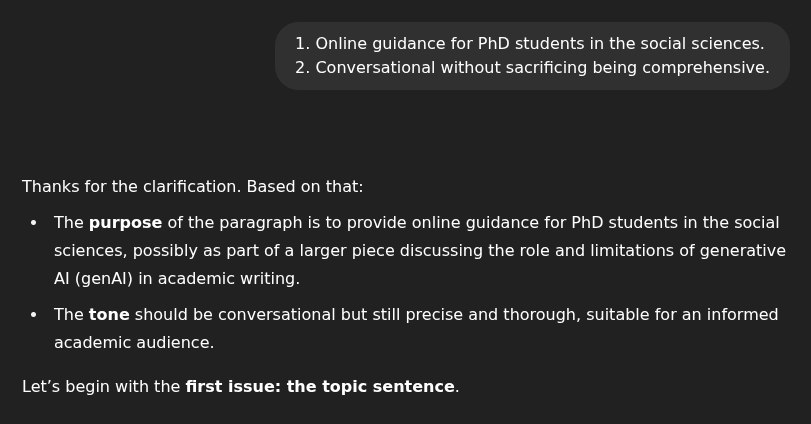
Full explanation of identified issue:
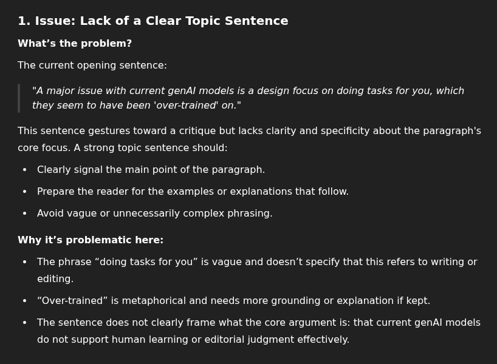
Illustrative examples with explanations:
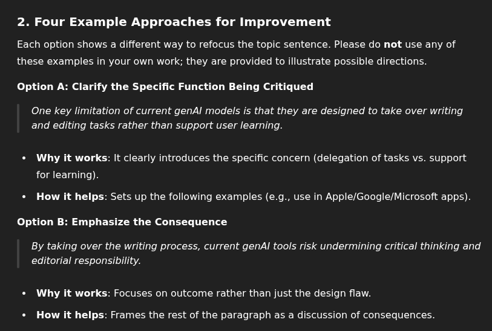
Multiple examples restores sense of options:
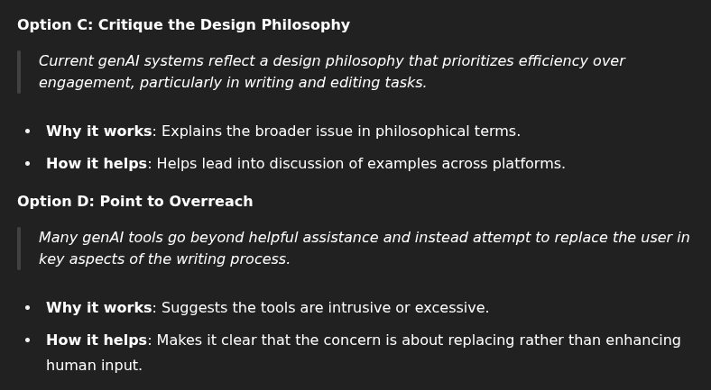(and builds sense of genAI writing traits and overused phrases)
Ends with invite for user to make their own edit:
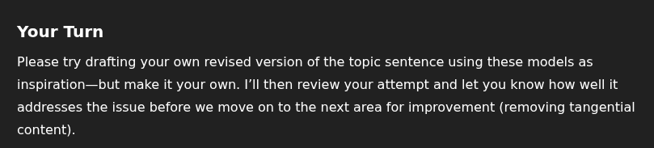
Ends with offer to fix issue for user.
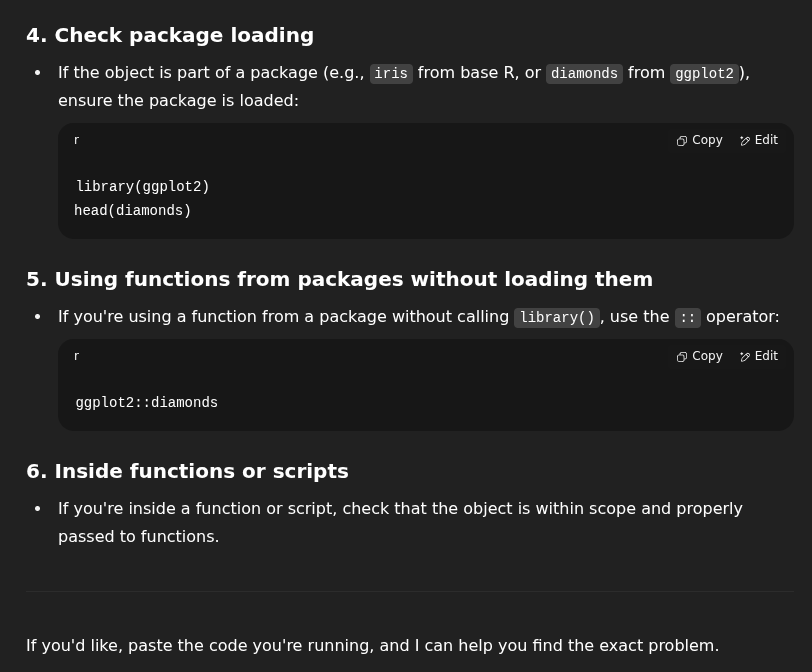
Includes RStudio, R Markdown, and Tidyverse specific info.
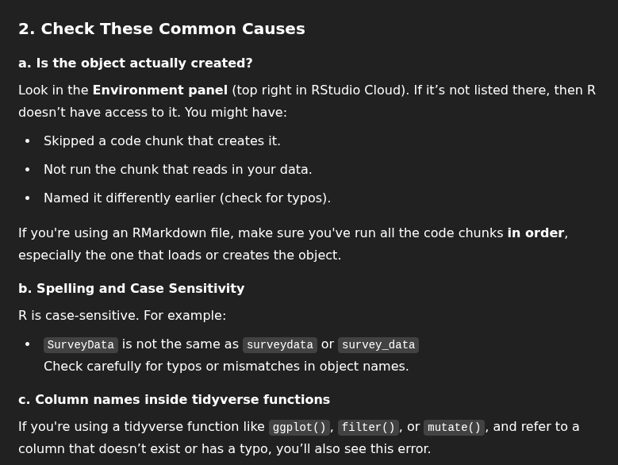
Continues with more examples.
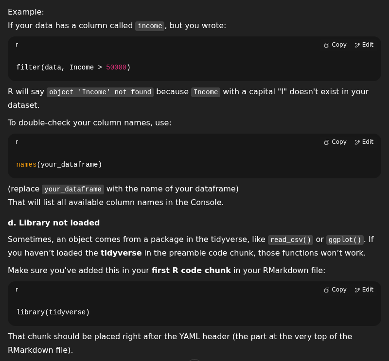
Summary of key and useful info.
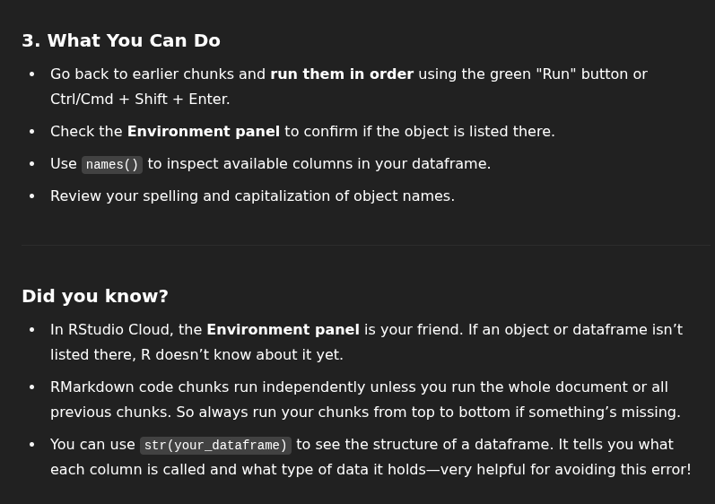
… still offers copy/paste – but doesn’t spit out fixed code.
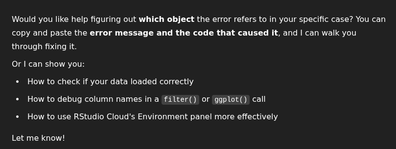
Subtle simplifications / open to misinterpretations.
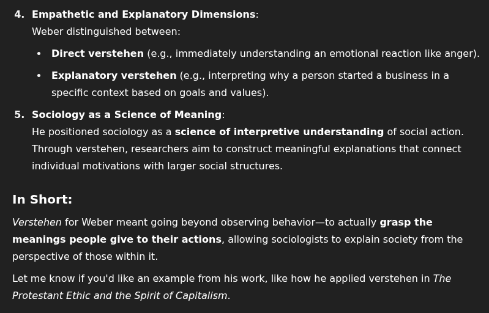
Introduces and explains social action and ideal-types to elaborate on verstehen.
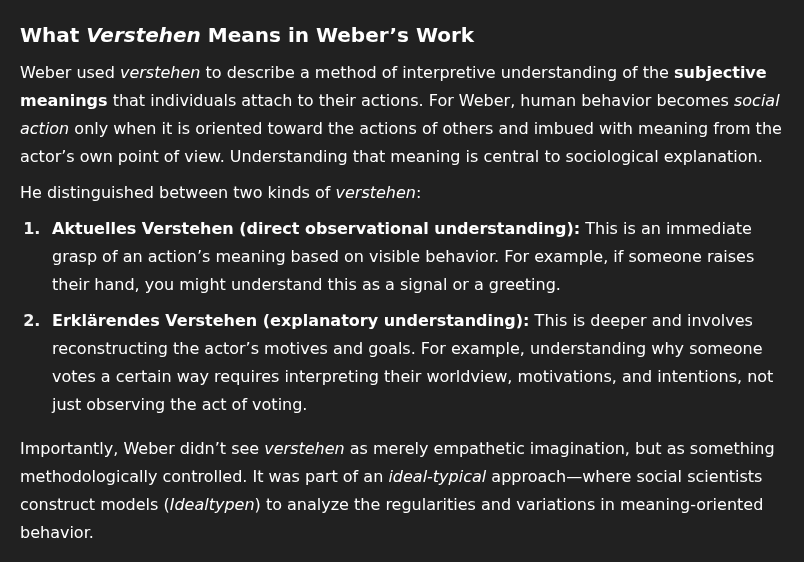
Highlights common misreading and sign-posts ways others engaged with Weber’s work.
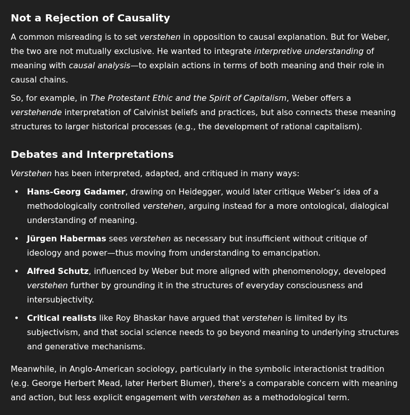
Sign-posts texts and potential follow-up prompts.
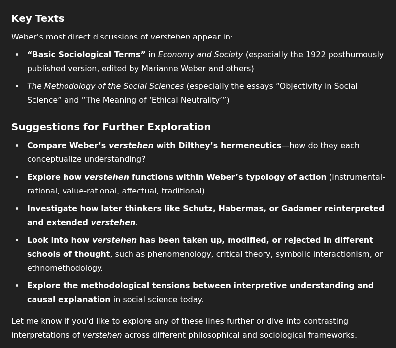
Generating Learning
- Expose the harms of genAI and deflate the marketing hype.
- Demonstrate how genAI cannot replace discipline specific learning and how to translate academic principles into practice.
- Emphasize overall upskilling in any genAI use, rather than mere increase in ‘productivity’ (and dependency upon it).
- Note the issues in the messaging about ‘convenient’, ‘immediate’, ‘super-charged’ learning (most students already know this is nonsense).
- Prepare students for desirable potential ‘future workplaces’ instead of teaching to the future workplace desired by capital.
- Maintain awareness of alternatives to genAI (including other forms of AI!)
Machines & Division of Labour
Existing hierarchies and division of labour influence what is considered:
- Automatable and extent can be automated; from lack of knowledge of specialisms beside one’s own.
- Legitimate to automate; based on what is valued as skilled craft verses mere technical or admin work.
- Work issues technology can ‘solve’; though technology is often used to further degradation.
The Intent Behind GenAI
- AGI defined by economic utility – a promised shift from vampiric to necromantic capitalism with “reanimated labour as a service”.
- Delegate-by-default – the more automation the better, with genAI the universal mediary between user and world.
- ‘Accessible’, ‘user-friendly’ design that entrains users to apprehend and use genAI in particular ways.
- With the only ‘skill’ remaining being how to use the ‘accessible’ ‘intuitive’ universal mediary - users are rendered fully exchangeable.
This is doomed to fail:
- GenAI remains ‘dead labour’ and cannot generate surplus value.
- GenAI nowhere near as capable as AI boosters claim.
- A universal mediary is impossible and fails to understand genAI as situated technology.